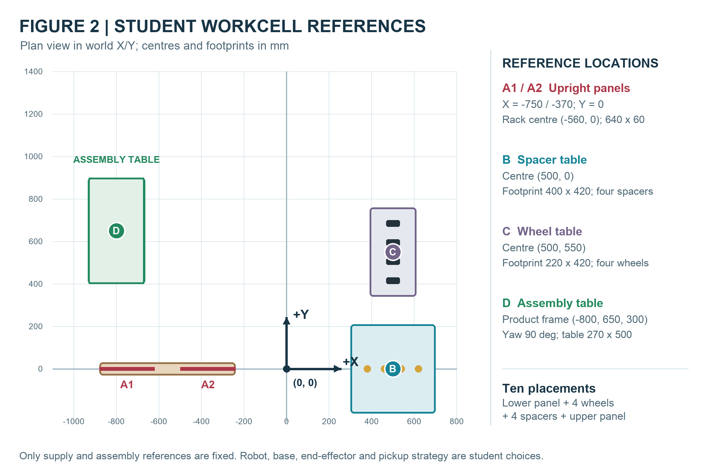

ECTE471 · STUDENT VERSION
Robotics and
Flexible Automation
Lecture PDFs, project specification and product/workspace three-view drawings.
Student Version · Lecture PDFs, project brief and reference drawings.
Browse lecture slides
COURSE SEQUENCE
Lecture slides
Open or print each lecture PDF. Lecture 09 is an optional lecture module.
- 01
- 02
- 03
- 04
- 05
- 06
- 07
- 08
- 09
- 10
GROUP PROJECT
Project specification
The current C24 assignment specifies ten placements and fixed supply and assembly stations. Teams choose their robot, base, grasp and end-effector strategy. The brief includes the approximate three-view product drawing and the workcell reference.
COURSE RESOURCES